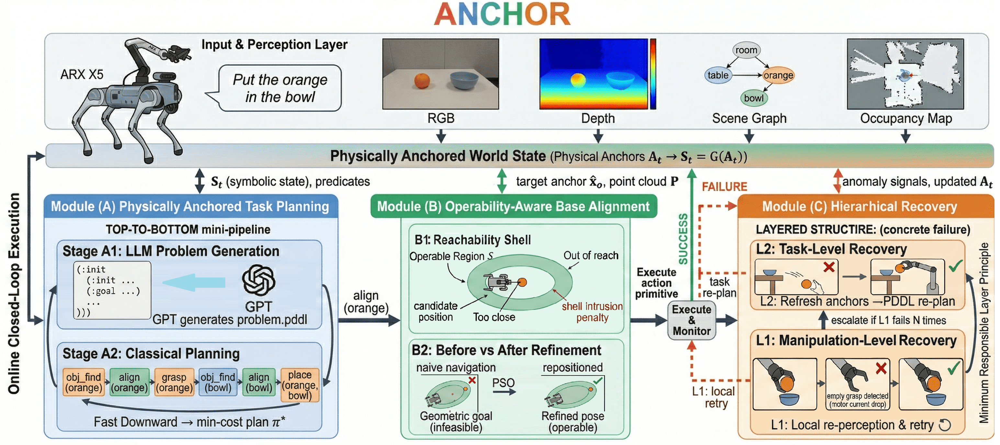
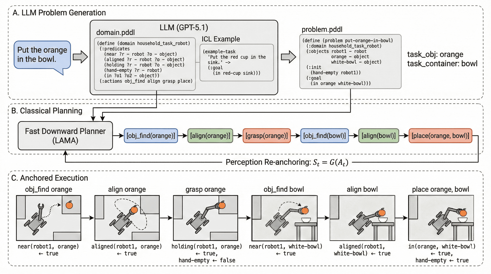
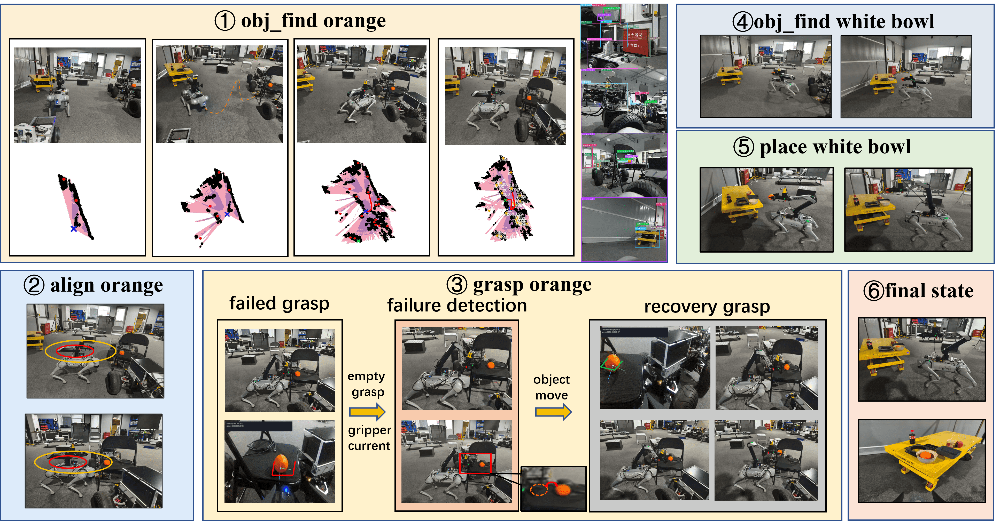

Open-vocabulary mobile manipulation in real domestic environments requires reliable long-horizon execution under open-set object references and frequent disturbances. In practice, many failures arise not from semantic misunderstanding, but from inconsistency between symbolic plans and the evolving physical world. To address this execution inconsistency, we present ANCHOR, a physically grounded closed-loop framework that aligns symbolic reasoning with verifiable physical state during execution. ANCHOR integrates three mechanisms: (i) physically anchored task planning, (ii) operability-aware base alignment, and (iii) minimum-responsible-layer hierarchical recovery. Across 60 real-robot trials, ANCHOR improves task success from 53.3% to 71.7% and achieves a 71.4% recovery rate under perturbations.

ANCHOR emphasizes deployability and robustness via continual state re-anchoring. Rather than deferring feasibility checks to execution, ANCHOR couples perception, planning, and control throughout the task.

The PATP pipeline enforces a state-consistency contract: every symbolic predicate must be backed by directly observable, verifiable geometric evidence at execution time. The system restricts the LLM to generating a well-formed PDDL problem skeleton, while all geometry-related constraints and predicate evaluations are handled by lightweight sensing modules.
Demo 1: In-place grasp and place.
Demo 2: Task execution with navigation.
Demo 3: Object is disturbed but remains in view; the system recovers and completes the task.
Demo 4: Object is moved out of view; the system re-searches, retrieves it, and then places it.

Qualitative real-robot trial illustrating closed-loop recovery and operability-aware alignment. (1) Target search; (2) Base alignment ensures manipulation feasibility; (3) L1 recovery triggers local re-grasp after an initial failure; (4-5) Successful placement.